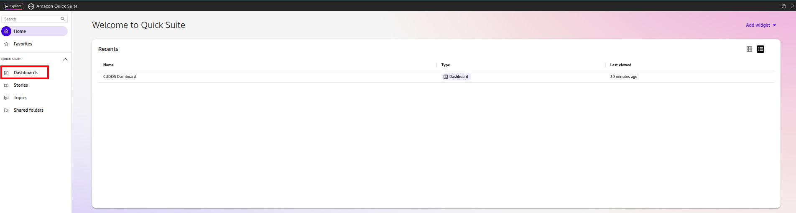
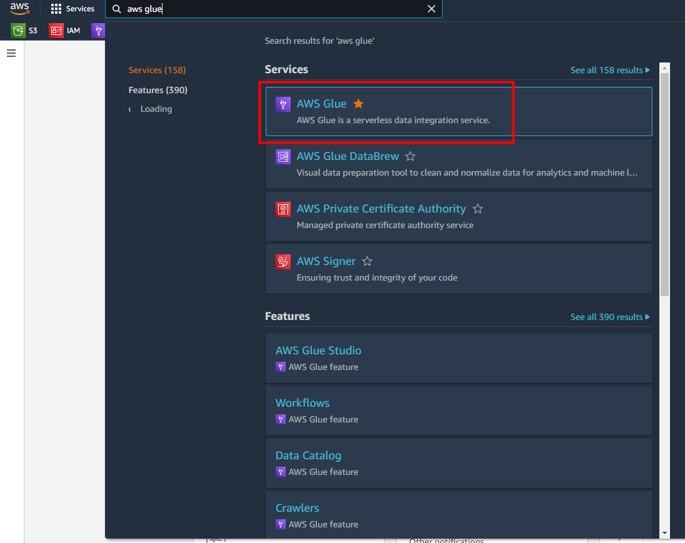
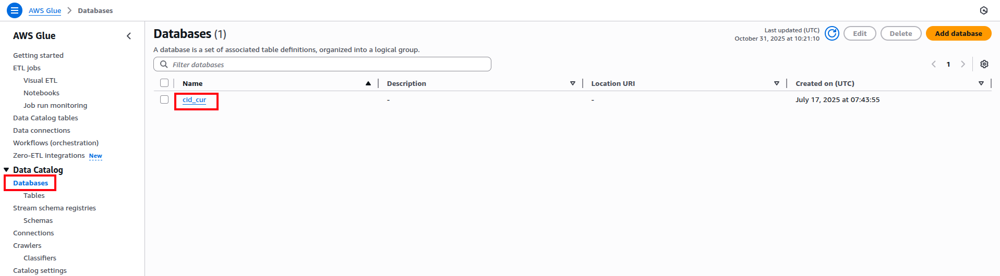
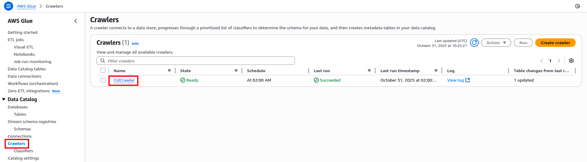
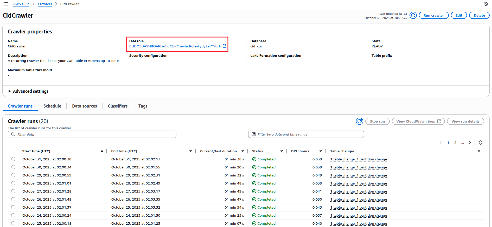
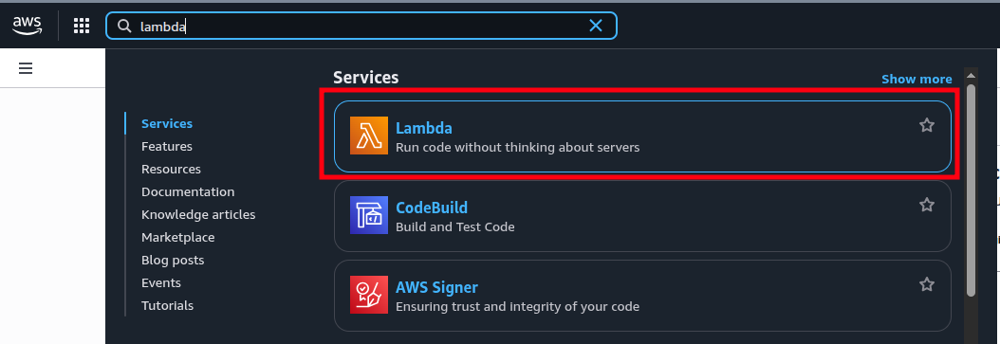
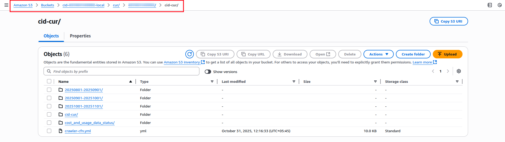
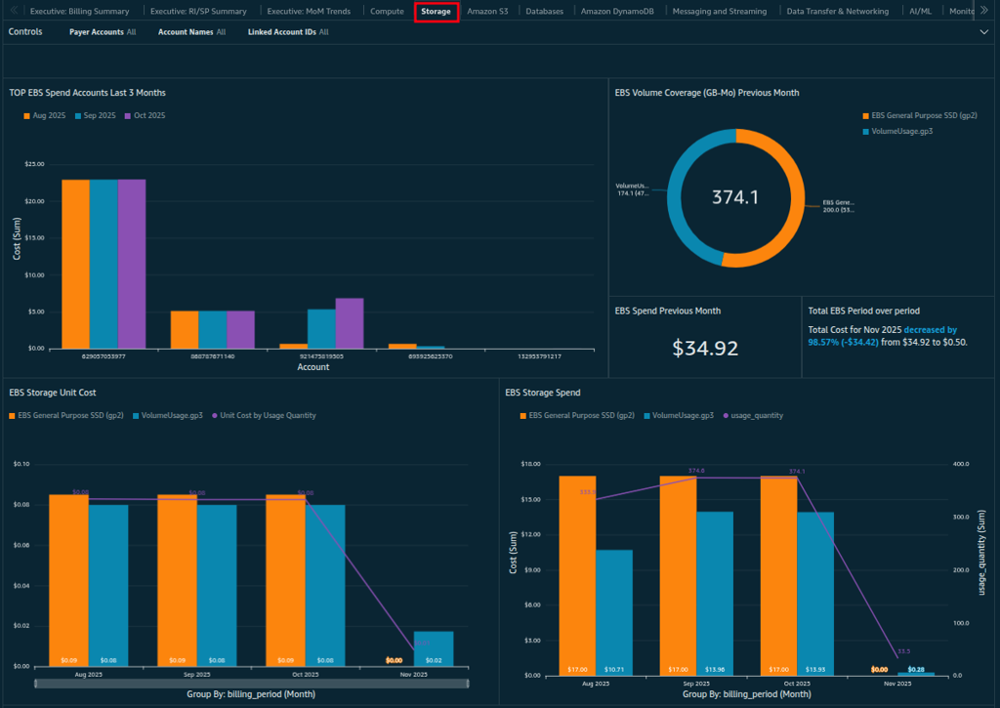
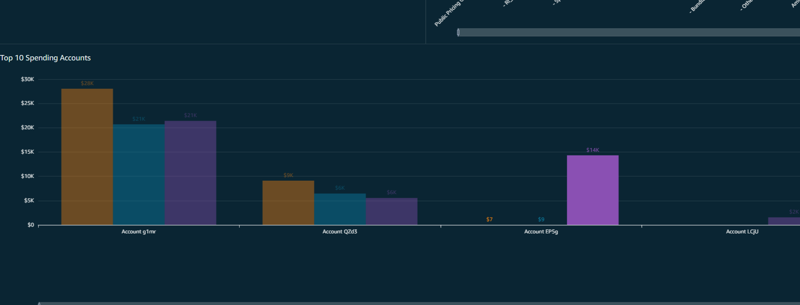
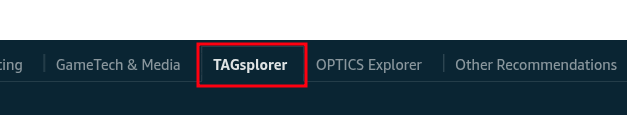

CUDOS Dashboard
Contents
In today's cloud landscape, managing AWS costs is key to efficiency and cutting waste. The CUDOS Dashboard (Cost and Usage Dashboard Operations Solution) is an open-source tool in AWS Cloud Intelligence Dashboards. It uses AWS Cost and Usage Reports (CUR) to offer detailed insights, recommendations, and visuals to optimize costs. This blog guides you through deploying CUDOS, its architecture, core services, and customizing it with user-defined tags, based on practical use and official AWS resources.
Introduction to CUDOS
CUDOS transforms raw CUR data into actionable intelligence using services like AWS Glue for data integration, Athena for querying, and QuickSight for visualizations. It offers high-level overviews alongside deep dives into usage patterns, supporting multi-account setups in AWS Organizations. Key benefits include ML-driven recommendations for rightsizing, reservations, and AWS Marketplace spend analysis.
The CUR provides comprehensive metadata on services, pricing, Reserved Instances, and Savings Plans, making it the foundation for CUDOS. AWS Glue prepares this data, Athena analyzes it, and QuickSight delivers interactive dashboards.
Prerequisites
Before diving in, ensure you have:
- Permissions: Admin access in your Management/Payer Account for CloudFormation, CUR, Athena, Glue, IAM, Lambda, QuickSight, and S3. All roles and policies are managed via templates.
- AWS Setup: Enable CUR with Athena integration. For multi-payer environments, prepare a Data Collection Account.
- Tools: Terraform for deployment (optional but recommended for automation), or use CloudFormation directly.
- Time Considerations: CUR reports take up to 24 hours to generate; dashboard data appears shortly after.
No costs beyond standard AWS usage apply. QuickSight's SPICE engine efficiently handles queries.
Architecture Overview
CUDOS architecture centers on CUR data flowing through a serverless pipeline:
- CUR reports are delivered to an S3 bucket.
- Glue crawlers index the data, creating tables in the Glue Data Catalog.
- Athena runs predefined queries to generate views.
- QuickSight datasets pull from these views for dashboard.
For multi-account scenarios, replicate CUR data from the Payer Account to the Data Collection Account using S3 replication rules.
Deployment Workflow
Deployment is streamlined via Terraform wrappers around CloudFormation, ensuring reproducibility.
Step 1: Set Up CUR in the Payer Account
Create an S3 bucket and CUR report:
module "cur_payer" {
source = "../../modules/cur-source"
}This provisions the bucket with necessary permissions for multi-payer support.
Step 2: Deploy CUDOS in the Data Collection Account
Use the CID module:
module "cid_dashboard" {
source = "../../modules/cudos-dashboard"
stack_name = "CUDOS-STACK"
template_bucket = "your-template-bucket" # Must exist
stack_parameters = {
"PrerequisitesQuickSight" = "yes"
"PrerequisitesQuickSightPermissions" = "yes"
"QuickSightUser" = "your-quicksight-user"
"DeployCUDOSv5" = "yes"
"DeployCostIntelligenceDashboard" = "no"
"DeployKPIDashboard" = "no"
"CURBucketPath" = "s3://your-cur-bucket/path"
}
}This deploys Glue crawlers, Athena views, Lambda functions, and QuickSight dashboards. Wait 24 hours for initial data population. Schedules for crawlers and datasets ensure regular updates.
Post-deployment, access QuickSight, select the "CUDOS Dashboard v5," and explore visualizations. Avoid paginated reports to control costs.
Validate Deployment
# Check outputs
terraform output
# In QuickSight
- Search: "CUDOS Dashboard v5"
- Open → Verify data in visuals
# In Athena
SELECT bill_payer_account_id, line_item_usage_account_id, sum(line_item_unblended_cost) as cost
FROM summary_view
GROUP BY 1, 2
LIMIT 10;
Services Under the Hood
CUDOS orchestrates several AWS services seamlessly. Here's a walkthrough:
AWS QuickSight
Dashboards: Access "CUDOS Dashboard v5" for visuals.
Datasets: Sourced from Athena views; scheduled refreshes ensure freshness. Manually refresh if needed.
Data Sources: Connected to Athena workgroup "CID."
AWS Athena
Workgroup: "CID" with tables and views (e.g., summary_view). Avoid deleting views.
Queries: Run SQL to explore CUR data.


AWS Glue
Databases: Contains CUR tables.
Crawlers: Scheduled to index S3 data; view IAM roles and run history.
Tables: Check schemas for partitioned data.
In the left panel, click Database. You will see the database name; if you followed the steps, it will be your database. Otherwise, you will see your input. Click it to check for tables.
Navigate to left panel and click on Crawlers.
To view the details of the crawler, click on the crawler.
Here you can see the IAM roles it is using and other details like crawler run, schedule and many more.
AWS Lambda
Functions: Handle automation, like dashboard creation via cid-cmd.
Click on Functions in the left panel to see the list of functions created.

Click on the function to see the details of the function.

AWS S3
Buckets: Store CUR files (e.g., cid-account-number-local). Directories include manifests, partitions, and status files.

Navigate to the left panel and click on buckets and search your local
Note: If you followed along, your bucket names will look like
cid-account-number-local and
aws-athena-query-results-cid-account-id-region.
Click on object and click the directory
AWS CloudFormation
Stacks: Manage resources; view events for deployment history. Update via Terraform to avoid conflicts.


AWS Billing and Cost Management
Data Exports: Configure CUR reports; view details for delivery settings.

In the left panel, click Data Export and select the report. If you deployed via Terraform with default values, the report name remains the same; otherwise, select your custom name.

Here you can see the details of the report.

These services integrate to provide end-to-end data flow without manual intervention.
Adding User-Defined Tags
Customize CUDOS by incorporating tags for grouping (e.g., by application or business unit) using cost allocation tags or categories.
Prerequisites
- Access to AWS Organizations.
- Enable tags in Cost Explorer.
- Activate AWS/user-generated tags.
- Changes reflect in CUR after 24 hours.
Step-by-Step Guide
Add Cost Categories
In Billing and Cost Management:
- Navigate to Cost Categories > Create.
- Define rules (e.g., by account or tag values).
- Set lookback periods if needed.
- Review and create.
Modify Queries in Athena
Select AwsDataCatalog and your database.
Edit views (e.g., summary_view): Add tag columns (e.g., lineitem_resourcetags_user_silo AS silo).
Update GROUP BY clauses.
-- Add new column
line_item_resource_tags_user_team AS team,
-- Update GROUP BY
GROUP BY 1, 2, 3, ..., teamRun and verify.
Repeat for hourly_view and resource_view.
Exploring the CUDOS Dashboard
Once deployed, dive into CUDOS Dashboard v5 in QuickSight. Organized into interactive sheets, it provides granular, recommendation-driven analysis of CUR data. Use global filters (top-right) for time ranges, accounts, regions, or tags. Here's a hands-on tour of key sheets and features:
- Start with Executive Billing Summary to instantly view your total AWS spend, top services, and budget versus actual in one clear dashboard. Click any number to drill down into accounts or regions.
- Go to compute to filter by instance type, compare CPU idle against cost, and access one-click rightsizing or Spot/Graviton recommendations.
- Move to storage to identify old backups or unused EBS volumes and apply lifecycle policies to save immediately. 
- Cost Monitoring on the based of regions
- Monitoring based on the account 
- Cost according to resource tags 


Best Practices and Troubleshooting
- Tagging: Consistently tag resources for accurate breakdowns.
- Monitoring: Schedule reviews; integrate with SSO for security.
- Upgrades: Keep to v5+ for features like DynamoDB simulations.
- Common Issues: If tags don't appear, verify Athena views and QuickSight refreshes. CUR delays are normal.
Organizations using CUDOS often achieve 15-25% cost savings through insights.
Conclusion
Implementing CUDOS provides a robust tool for AWS cost management. From deployment with Terraform to custom tagging, this guide covers the essentials to start. Beyond visibility, CUDOS converts raw CUR data into actionable intelligence, offering ML-powered savings recommendations, resource-level insights, and accurate forecasting.